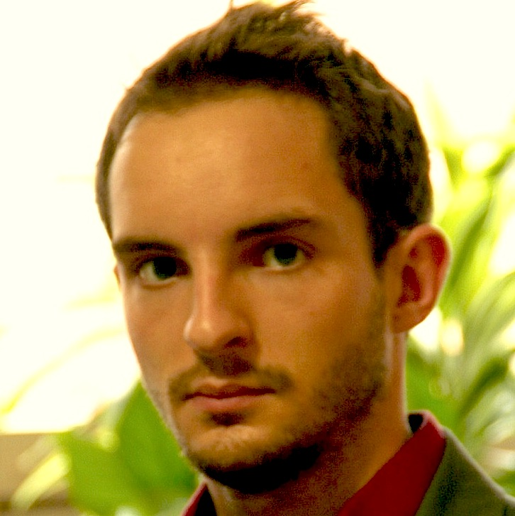

<div class="container">
  <div class="row">
    <div class="col-md-8">
       <h1>About Me</h1> 
      <h3 class="page-header">PhD candidate @<a href="http://mit.edu">MIT</a> in <a href="http://orc.mit.edu">Operations Research</a></h3>
      <p>
        I am a 4th year PhD student, co-advised by Profs.
        <strong><a href="http://web.mit.edu/dbertsim/www/">Dimitris Bertsimas</a></strong> and
        <strong><a href="http://web.mit.edu/jaillet/www/">Patrick Jaillet</a></strong>.
        My primary research interests involve scaling traditional Optimization and Statistics techniques
        to real world problems involving large datasets, with applications to Transportation.
      </p>
      <div class="panel panel-default">
        <div class="panel-heading"><strong>Education</strong></div>
        <div class="panel-body">
          <p>Prior to joining MIT, I graduated from <a href="https://www.polytechnique.edu/">Ecole polytechnique</a> (X2011) with a MS degree in Applied Mathematics.</p>
        </div>
      </div>
      <div class="panel panel-default">
        <div class="panel-heading"><strong>Work Experience</strong></div>
        <div class="panel-body">
          <p>I previously worked as a software engineer intern at <strong>Google</strong> in 2016. I worked as a visiting researcher for a summer in <strong>UC Berkeley</strong> under <a href="http://bayen.eecs.berkeley.edu">Pr. Alexandre Bayen</a> supervision.
            In 2013, I also won a<a href="https://www.polytechnique.edu/fondation/prix-jean-louis-gerondeau-zodiac-aerospace"> 10K innovation prize</a> for a smart bicycle <strong>start-up</strong> project.</p>
        </div>
      </div>
      <div class="panel panel-default">
        <div class="panel-heading"><strong>Teaching Experience</strong></div>
        <div class="panel-body">
          <p>I have taught Analytics to MBAs at the <a href="http://mitsloan.mit.edu">Sloan School of Management</a> as a <strong>teaching assistant</strong> in 2016, and on the online platform EdX for thousands of students in 2017. I also <strong>lectured</strong> in a <a href="https://philchodrow.github.io/cos_2017/">graduate class</a> about Operations Research software tools in 2016 and 2017.</p>
        </div>
      </div>
      <p> More information is available in my <a href="http://www.linkedin.com/in/sebmart">LinkedIn</a> profile or <a href="http://github.com/sebmart">GitHub</a> account.</p>

    </div>
    <div class="col-md-4">
      <div class="well aboutme">
        </span>
        <h1>Sébastien Martin</h1>
        <p><a href="http://orc.mit.edu">Operations Research Center</a> - <a href="http://mit.edu">MIT</a> <br />
          <a href="http://mitsloan.mit.edu">Sloan School of Management</a> - <a href="http://lids.mit.edu">LIDS</a></p>
      </div>
    </div>
  </div>
</div>
